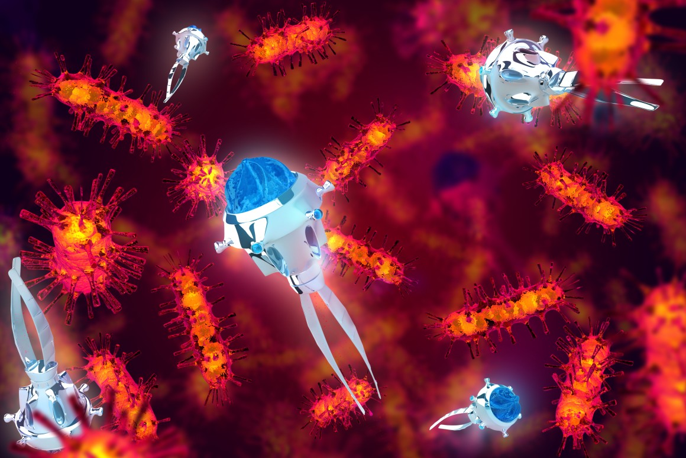

Award-winning scientist and science communicator Dr Jamie Gallagher said, ” Currently if something in your body goes wrong, we flood the whole body with medicine. Using nanotechnology, we could build cages which can seek out just the area of damage and take the medicine directly to them.”  Researchers have reported a method where nanobots can swim swiftly through the blood to reach their Delivery destination. In 2015, researchers working at the University of California, San Diego proved that nanobots can travel inside a living creature and deliver their medicinal load without any harmful effects. Nanobots propelled by gas bubbles, made from a reaction with the contents of the stomach when they are deposited, were successfully deployed in the body of a live mouse. The nanobots used were tubular and about 5*5 micrometers and coated in zinc. Once the nanobots were ingested by the mouse the zinc reacts with digestive juices to produce bubbles of hydrogen which then propelled the nanobots along like miniature rockets. The bots headed towards the stomach lining and embedding themselves onto it. They then dissolved and delivered a nanoparticle compound directly into the gut tissue. This test was considered very successful by the team. all of the nanobots that reached the stomach stayed attached to the stomach lining for a full 12 hours after digestion.
After the mouse was eventually euthanized and the stomach was dissected, researchers reported no raised level of toxicity or tissue damage, The University of California nanobots are the first self propelled micromachines. This makes the research far more successful and cites the fact that this is now the beginning of a proven method to deliver targeted drug administration. Of course many more successful tests need to be performed before this nanobot is used in treatment. However, this is one of the vital first steps towards nanobot for more accurate drug delivery systems.